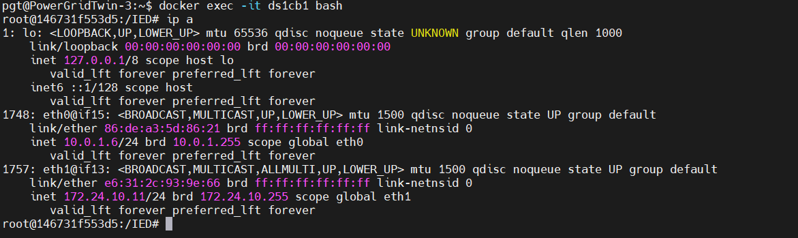

Docker Container Interfaces
Docker Container Interfaces
ip ainside the docker container of an IED afterdocker exec -it ds1cb1 bash:

Different use cases of the 2 network interfaces:
1. eth0 : 10.0.1.6/24
Default interface created when the container is attached to a Docker network (bridge, overlay, or custom)
Use case:
- Used for container-to-container communication inside the same Docker network
- Other containers on the same network (subnet
10.0.1.0/24) can reach this container via10.0.1.6 - Not directly routable from the host machine unless you expose ports (via
-p host_port:container_port)
Example:
- If you have another container on the same Docker network, it can
ping 10.0.1.6or connect directly to its services.
2. eth1 : 172.24.10.11/24
A second interface — likely because you attached this container to another Docker network (such as with --network flag or via Docker Compose multiple networks)
Use case:
- Provides connectivity to containers/services on the
172.24.10.0/24subnet - Might be used for external integration (such as simulating a "backend network" while
eth0handles a "frontend network") - Useful in multi-network setups, where a container acts as a bridge between 2 networks
Example:
- If you are running a database container on the
172.24.10.0/24network, this container can talk to it via172.24.10.x
Which IP can you use from the host machine?
- Normally, you don't use these internal container IPs from the host.
- Instead:
- Use localhost (127.0.0.1) on the host with port mappings (-p 8080:80)
- If using macvlan/host networks, the container may be directly reachable on one of these IPs (
10.0.1.6or172.24.10.11) from the host or even other machines on the LAN.
Summary:
eth0 (10.0.1.6): main Docker network, container-to-container communication.eth1 (172.24.10.0): secondary Docker network, used if container needs to talk to another isolated group of services.- From the host, you usually connect via
localhost+ published ports, unless you intentionally configured a special network (macvlan, host, overlay).
To check if these IPs are reachable directly from host or internal-only :
...to be continued...